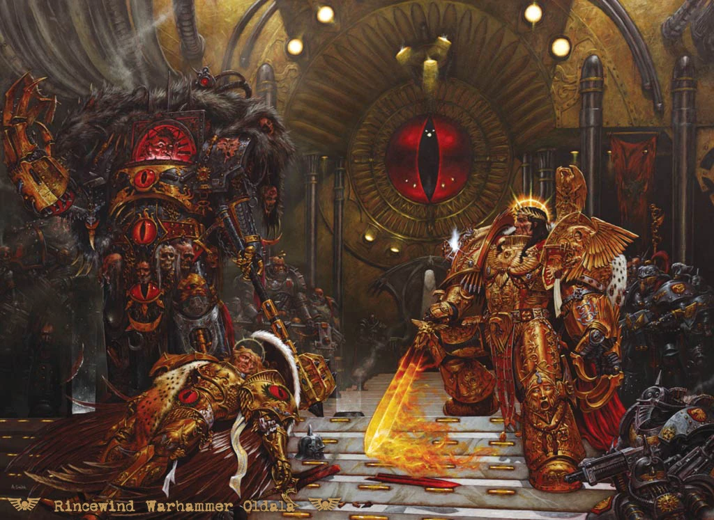
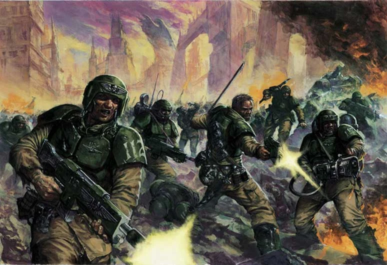
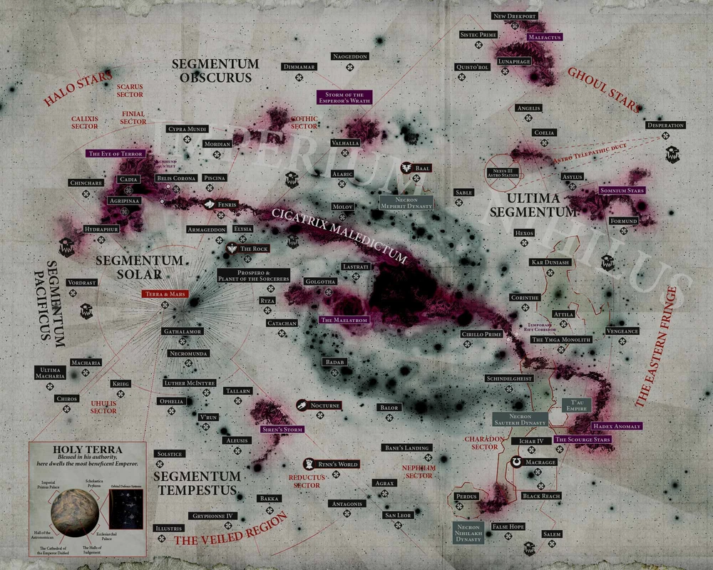

Historia
Warhammer 40,000 y Warhammer Fantasy son dos juegos de mesa diferentes producidos por
Games Workshop. Aunque ambos juegos comparten algunos temas similares, como la fantasía heroica y la ciencia
ficción, hay algunas diferencias notables entre ellos:
-
Warhammer Fantasy se desarrolla en un mundo de fantasía medieval, mientras que Warhammer 40,000 se desarrolla
en un futuro distópico en el que la humanidad ha colonizado miles de planetas y se encuentra en constante
guerra con otras razas alienígenas
-
-Los enanos no son parte de Warhammer 40k. Lo mismo ocurre con los Lagartos y la mayoría de los No Muertos.
(Los Reyes Funerarios se convierten en Necrones).
-
Tenemos un sistema de envío rápido y seguro, con entrega en 24/72 horas y opción de recogida en tienda.
-
El Tau de 40K no tiene equivalente Fantasy. Tiránidos también.
-
Skaven puede estar en 40K, pero no como una facción real, solo plagas muy menores en algunos mundos.
-
Los sapos que comandaban a los Hombres Lagarto estaban en 40K, pero se extinguieron después de crear a los
Orkos.
-
En Fantasía, a los Elfos les va tan bien como a cualquier otra facción. Están muriendo en masa en 40K,
incapaces de reproducirse para reponer sus números.
-
En Fantasía, el Emperador humano está despierto y activo en el mundo. Es un cuerpo en un trono en 40K. No
está claro si todavía está vivo.
-
Exterminatus es algo que los humanos pueden hacer en 40K. Destruye mundos enteros. Considere una sola bomba
nuclear capaz de convertir toda la superficie de la Tierra en la superficie de Marte. No hay equivalente en
Fantasy, principalmente porque no hay ‘reconstrucción’ posible después.
En la siniestra oscuridad del Milenio XXXXI, solo hay guerra...
Eventos importantes de Warhammer 40000
La herejia de Horus
La Herejía de Horus es una saga oscura de ciencia ficción militar que transcurre en un futuro muy, muy
lejano. Forma parte del mundo de Warhammer 40,000 (uno de los juegos de mesa del género de rol más famosos del
mundo). La serie, aún en curso, está formada por novelas de larga duración escritas por varios autores. La
primera novela fue publicada en abril de 2006 por la editorial Black Library. En mayo de 2019, tras 54
novelas, la serie añadió como subtítulo “Siege of Terra”, iniciando así el final de la saga 1.
La trama principal de la serie se centra en la Herejía de Horus, un conflicto que tuvo lugar en el año 30.000,
en el que el Primarca traidor Horus lideró una rebelión contra el Emperador del Imperio de la Humanidad 1. La
serie explora los eventos que llevaron a la Herejía, así como sus consecuencias y el impacto que tuvo en el
universo de Warhammer 40,000.


La caida de Cadia
La Caída de Cadia fue un evento catastrófico que tuvo lugar en el año 999.M41 en el universo de Warhammer
40,000. El planeta Cadia, que era uno de los Mundos Fortaleza más importantes del Imperio de la Humanidad, fue
destruido por las fuerzas del Caos 12. La caída de Cadia fue un momento crucial en la historia del universo de
Warhammer 40,000, ya que permitió que las fuerzas del Caos invadieran el Imperio de la Humanidad y desencadenó
una serie de eventos que llevaron a la Gran Grieta
La Gran Grieta
La Gran Grieta, también conocida como Cicatrix Maledictum, es una enorme fisura disforme que atraviesa la
galaxia desde el Ojo del Terror, en el Segmentum Obscurus, hasta el Golfo de la Disformidad, en el Segmentum
Ultima 1. La Gran Grieta fue creada por la destrucción del planeta Cadia en el año 999.M41, que permitió que
las fuerzas del Caos invadieran el Imperio de la Humanidad y desencadenó una serie de eventos que llevaron a
la apertura de la Gran Grieta 21. Desde entonces, la Gran Grieta ha sido una fuente constante de peligro y
conflicto en el universo de Warhammer 40,000
